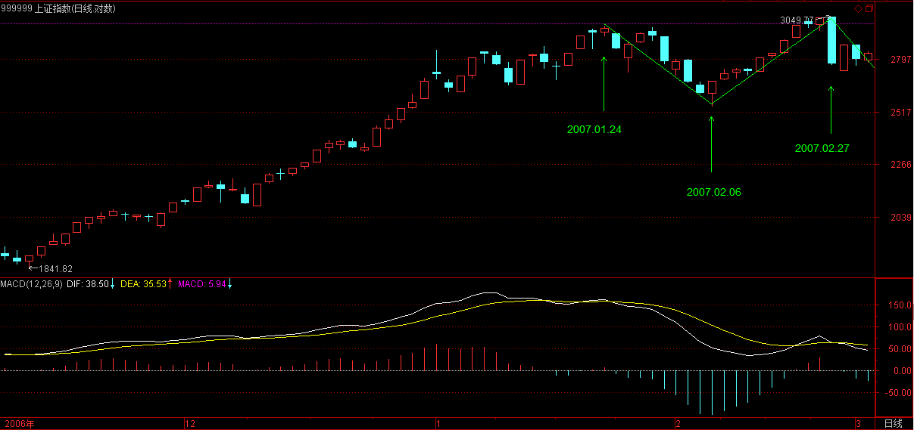
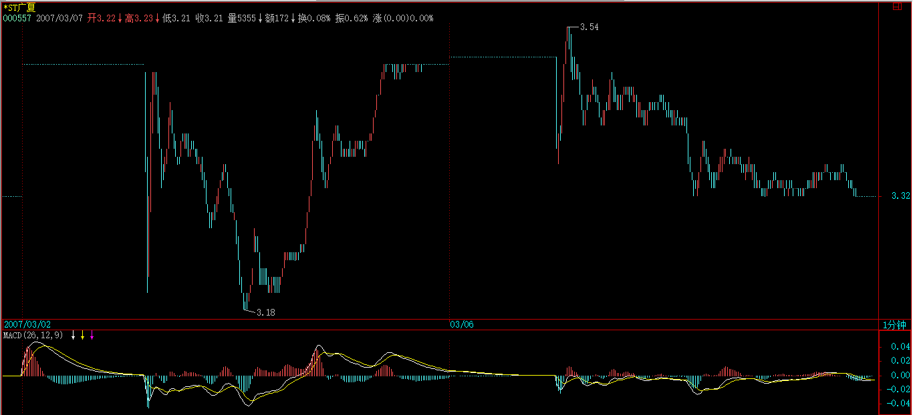

(2007-03-02 15:20:37)
如果市场都是标准的a+A+b+B+c，A、B的中枢级别一样，那这市场也太标准、太不好玩了。【韶山映山红】标准的趋势。】
市场总有其复杂的地方，使得市场的走势呈现一种多义性，就好象诗词中文字的多义性一样。如果没有多意义性，诗词都如逻辑一样，那也太没意思了。【韶山映山红】是市场本身有多义性，所以要有多义性分析。】
而所有走势的多义性，都与中枢有关。【韶山映山红】没有中枢的连接段，通道式的涨跌，都是过渡，不会有歧义，也就没有多义性。只有中枢震荡的时候，才有不同角度的围观，所以都要围绕中枢做分析。】
【韶山映山红】若禅精舍（陈秋明）：
岂止是标准的趋势，一旦进入到小级别，各种不标准图形随处可见，理论适用于理论条件之中。一般三十分钟以上，就比较少见非标图形，有的话也经常发生在暴涨暴跌之后，这对普通投资者的操作范围有一定的控制要求，进入市场的第一步是了解自己，明明自动挡都开不好，总认为自己能上F1赛场，这种事情如果放在日常生活中，纯粹是个笑话，但在股市里简直太常见。
】
例如，5分钟级别的中枢不断延伸，出现9段以上的1分钟次级别走势。站在30分钟级别的中枢角度，3个5分钟级别的走势重合就形成了，而9段以上的1分钟次级别走势，每3段构成一个5分钟的中枢，这样也就可以解释成这是一个30分钟的中枢。【韶山映山红】“解释成”。】
这种情况，只要对中枢延伸的数量进行限制，就可以消除多义性，一般来说，中枢的延伸不能超过5段，也就是一旦出现6段的延伸，加上形成中枢本身那三段，就构成更大级别的中枢了。【韶山映山红】为什么延伸升级是多义性？因为三个次级别中枢，前面两个中枢都没有第三类买卖点，也就是说，没有完成，但是，又完成了。扩张升级的中枢有同样的问题。★以后研究。】
【韶山映山红】第1种多义性：延伸升级中枢的次级别划分。走势类型处于畸形的特殊状态。】
【韶山映山红】“一般来说，中枢的延伸不能超过5段，”换句话说，也不是所有情况都不能超过5段，不能看见9段就一律延伸升级。原文实例就是下图22-31的9段，缠师并没有按照9段升级去划分，而是把17-38划分成了一个1分钟上涨趋势。】
【韶山映山红】若禅精舍（陈秋明）：
上图的中枢区间，是站在5分钟级别视角来取的高低点，在30分钟视角下，5分钟中枢延伸成为30分钟级别中枢，该30分钟中枢的区间，已经不是原来5分钟中枢的区间了。
】
另外一种多义性，是因为模本的简略造成的。不同级别的图，其实就是对真实走势不同精度的一种模本，例如，一个年线图当然没有1个分笔图的精确度高，很多重要的细节都不可能在大级别的图里看到。【韶山映山红】所有能看到的K线图都不是“真实走势”，都只是“不同精度的一种模本”。不同周期K线图有不同的细节，不同细节基础上的走势分析也就有了歧义。】
而所谓走势的级别，从最严格的意义上说，可以从每笔成交构成的最低级别图形不断按照中枢延伸、扩展等的定义精确地确认出来，这是最精确的，不涉及什么5分钟、30分钟、日线等。但这样会相当累，也没这个必要。【韶山映山红】真正的“真实走势”是“每笔成交构成的”走势递归出来的。】
用1分钟、5分钟、30分钟、日线、周线、月线、季线、年线等的级别安排，只是一个简略的方式，最主要是现在可以查到的走势图都是这样安排的，当然，有些系统可以按不同的分钟数显示图形，例如，弄一个7分钟的走势图，这都完全可以。这样，你完全可以按照某个等比数列来弄一个级别序列。【韶山映山红】用K线图做级别序列的关键是等比数列。】
不过，可以是可以，但没必要。因为，图的精确并没有太大的实质意义，真实的走势并不需要如此精确的观察。【韶山映山红】对操作的指导“并不需要如此精确的观察”。也就是说，走势分析的划分，即使存在一定程度的错误，也不是不行，更重要的是应对机制。】
当然，一些简单的变动也是可以接受的，例如去掉30分钟，换成15分钟和60分钟，形成1分钟、5分钟、15分钟、60分钟、日线、周线、月线、季线、年线的级别安排，这也是可以的。【韶山映山红】“级别序列”的“等比数列”不需要很严格，反正都是简略的模本。】
【韶山映山红】若禅精舍（陈秋明）：
对于级别，以走势类型来划分出来的中枢级别，很多时候就是在本级别图上看起来更加明朗，例如30分钟中枢，在30分钟图上就比较清晰，到5分钟的话零碎的走势信息太多，指标也被拆散成N块。而其实在实际分析与操作中，并不是说规定了1分、5分、30分、日线、周线这样的级别系统后，其他级别的图形就不看了，这是不一定的。例如一个日线走势的次级别走势段，可能因为走势本身的原因，在60分钟上看的更加清晰，那在60分钟图形去观察就可以了。级别只是用来更好解读走势本身的一个工具，如何灵活的运用好各种工具，以使走势能够被自己更加清晰和准确的解读，是考验操作者通过理论对走势本身理解程度的地方。
】
虽然没有必要精确地从最低级别的图表逐步分析，但如果你看的图表的缩放功能比较好，当你把分笔图或1分钟图不断缩小，这样，看到的走势越来越多，而这种从细部到全体的逐步呈现，会对走势级别的不断扩张有一个很直观的感觉，这种感觉，对你以后形成一种市场感觉是有点帮助的。【韶山映山红】对走势递归的直观感觉，有助于形成“市场感觉”。】
在某个阶段，你可能会形成这样一种感觉，你如同站在重重叠叠的走势连绵中，而当下的趋向，仿佛照亮着层层叠叠的走势，那时候，你往往可以忘记中枢之类的概念，所有的中枢，按照各自的级别，仿佛都变成大小不同的迷宫关口，而真正的路只有一条，而你的心直观当下地感应着。
说实在，当有了这种市场清晰的直觉，才算到门口了。【韶山映山红】这还只是到了缠论的门口。】那时候，就如同看一首诗，如果还从语法等去分析，就如同还用中枢等去分析一样，而真正的有感觉的读者，是不会计较于各种字句的纠缠的，整体的直观当下就呈现了，一首诗就如同一自足的世界，你当下就全部拥有了。【韶山映山红】自足的世界，不会被诱惑所控制，也不会在乎别人的看法。】
市场上的直观，其实也是一样的。只要那最细微的苗头一出来，就当下地领悟了，这才算是对市场走势这伟大诗篇一个有点合格的的阅读。
【韶山映山红】第2种多义性：模本的简略必然带来信息的丢失或扭曲，要积累精确观察以形成市场清晰的直觉。】
【韶山映山红】若禅精舍（陈秋明）：
对走势的阅读，是不需要逐字逐句去抠的，只有刚开始学习认字的时候才搬一本字典放边上随时查字。而整幅走势图展现在操作者眼前的那一刹那，走势的当下意义就应该有所明了，这种感觉其实并不能言传，只能自己去体会。
对静态图形的复盘分析，是对培养这种感觉很有利的一种方式，这最大的作用是可以让你节省大量的分析时间，方便选股。一眼看过去合眼就扔自选里面，不合眼就pass，这样才有点样子，而这需要大量复盘分析的练习才可能达到。
而在盘中的当下，其实和对静态图形的感觉培养基本类似，无非多了盘口这玩意，很多时候盘口的变化可以进一步印证走势形态的当下阶段。更进一步的，在盘中当下，基本了解整个市场的脉络以及脉动，在这个交响乐的大合奏里，清晰的听到现在是小提琴声，过一会是爱尔兰风笛声，这样的看盘和盯盘，才有了一个较好的操作者的状态。
】
在一名能充分直观的阅读者眼里，多义性是不存在的，而当这种最明锐的直觉还没出现时，对走势多义性的分析依然必要，因此也必须继续。【韶山映山红】真正的走势分析不需要多义性，是我们能力的不足，才需要多义性分析来佐证，来补漏。】
换句话说，如果玩不了超逻辑的游戏，那只能继续在逻辑的圈子里晃悠。【韶山映山红】缠论的技术分析本身属于逻辑的圈子。可惜很多人是逻辑的圈子还没学会玩，就装超逻辑的逼。】
除了上面两种多义性，还有一种有实质意义的多义性，也就是走势分析中的多种合理释义，这些释义都符合理论内在的逻辑，【韶山映山红】前面两种都是本义，后面这些是释义。释义可以多角度，要符合理论内在的逻辑。】因此，这种多义性反而不是负担，而是可以用多角度对走势进行一个分析。【韶山映山红】互相帮协，或者互相佐证。】
【韶山映山红】若禅精舍（陈秋明）：
对市场的感知，是当下直观的，例如我们看到一幅很喜欢的画，马上被这幅画的内容所吸引，心里的共鸣开始起来。但这时，是没有人去仔细分析里面笔法的，磅礴、清丽、温暖等感觉是在见到画的那一瞬间，直观感受到的。对于走势同样如此，力度直观的在走势当下能够呈现出来，对级别之类的概念当时是不存在的，一切定义也是不存在的，只有图形本身所带给你的直观感受。
很多人喜欢去追求在日线上怎么看五分钟中枢这类无聊的事情，日线上不需要去看五分钟中枢，探究这玩意就和研究茴字有多少种写法一样，要看五分钟中枢直接去五分钟看就好了。而在刚开始学习的时候，从最小级别慢慢递归上来，刻意练习自己对走势的熟悉程度，这是必须的过程，而随着这样的刻意练习次数多了，自然可以在日线上评估出某三根K线是五分钟中枢，这是随着你递归的走势越来越多，对走势从细节到大级别的对应观察经验越来越丰富，自然而然能够形成的一种直觉。
】
例如，对a+A+b+B+c，a完全可以有另一种释义，就是把a看成是围绕A这个中枢的一个波动，虽然A其实是后出现的，但不影响这种看法的意义。同样c也可以看成是针对B的一个波动，【韶山映山红】c虽然是B中枢的离开段，但未必还是针对B的波动，所以这里说“也可以看成是”。】这样整个走势其实就简化为两个中枢与连接两者的一个走势。
在最极端的情况下，在a+A+b+B+c的走势系列类型里，a和c并不是必然存在的，而b完全可以是一个跳空缺口，这样，整个走势就可以简化为两个孤零零的中枢。【韶山映山红】“a和c并不是必然存在的，而b完全可以是一个跳空缺口，”从这句话理解，“跳空缺口”也是“存在”。那么，什么样子算是不存在？ 新股上市的时候形成第一个中枢可能没有a。还有什么情况？★以后研究。 B中枢的离开段包含B中枢的第三类买卖点的时候c才成立，所以没有第三类买卖点的离开段的小转大形成新的同级别走势类型的时候，就没有c。】
【韶山映山红】这个图，算不算是左边没有c，右边没有a？】
把这种看法推广到所有的走势中，那么任何的走势图，其实就是一些级别大小不同的中枢，把这些看成不同的星球，在当下位置上的星球对当下位置产生向上的力，当下位置下的产生向下的力，而这些所有力的合力构成一个总的力量，【韶山映山红】结构力，“市场已有走势构成的一个当下的力”。当下的前世。也就是说，前面的走势类型分析的目的和意义，也就在于对这个合力的描述。】而市场当下的力，也就是当下买卖产生的力，买的是向上的力，卖的是向下的力，这也构成一个合力，【韶山映山红】交易力。“当下的交易产生的力”。当下的今生。】前一个合力是市场已有走势构成的一个当下的力，【韶山映山红】市场已有走势所形成的结构，本质上是一种能量结构，对当下产生的作用，就成为结构力。结构力是可观察、可分析的，所以就成为了预测未来的依据。】后者是当下的交易产生的力，【韶山映山红】走势在本质上完全由当下的交易产生的力所控制。各种因素都影响交易行为，这个是没办法预先观察，也做不到完全分析的，所以只能一边用实际的结果去观察，一边用完全分类去应对。】而研究这两种力之间的关系，就构成了市场研究的另一个角度，也就是另一种释义的过程。【韶山映山红】“市场已有走势构成的一个当下的力”，“当下的交易产生的力”，两者的合力，也就是驱动走势的动力。所以说，这里是窥探动力学奥秘的一把钥匙。可以做个专题。以后研究。】
这是一个复杂的问题，以后会陆续说到，算是高中的课程了。【韶山映山红】这里是缠师唯一提到“高中的课程”。“初中的课程”是缠论的当下，“高中的课程”是动力学对整个缠论的刷新。】
【韶山映山红】缠论第一高手的博客说：“走势是合力的结果，这个结果也构成新的合力。在构成走势合力的多种因素中，参与者对股票价格的预期构成了最原始的盘口。”】
【韶山映山红】第3种多义性：中枢星系的动力学原理。】
【韶山映山红】若禅精舍（陈秋明）：
中枢对两头的走势都会有吸引力，这就是星球这种比喻的来源。例如五分钟上涨，然后30分钟中枢，然后又是五分钟下跌，这下跌就可以和前面的上涨来比较力度，这相当于是市场合力对某个价格区间，以及该价格区间以外的价格区间，这二者的认同程度，这种认同程度会直观的体现在走势力度和级别上。
后面有一节内容，专门用了一段实际走势来演绎多义性的分解、分析过程，遇到了再详细看。
而其实对于多义性而言，任何理论都会存在多义性，因为任何理论都是用来解读或者说阅读走势的一种工具，并不是走势本身，那么不同的视角或者不同的组合，当然就可以折射出不同的或者相同的指示，最终的落脚是客观现实呈现的走势图，而不是什么理论。
】
现在先别管什么力不力的，可以从纯粹中枢的角度对背驰给出另外的释义。【韶山映山红】中枢分析的角度。】
对a+A+b+B+c，背驰的大概意思就是c段的力度比b的小了。那么，站在B这个中枢的角度，不妨先假设b+B+c是一个向上的过程，那么b可以看成是向下离开中枢B，而c可以看成是向上离开中枢B。所谓顶背驰，就是最后这个中枢，向上离开比向下离开要弱，而中枢有这样的特性，就是对无论向上或向下离开的，都有相同的回拉作用，【韶山映山红】是否可以量化这个“相同”？b的一端至少是中枢的ZG，那么，对c的回拉也至少是中枢的ZG？★以后研究。】既然向上离开比向下离开要弱，而向下离开都能拉回中枢，那向上的离开当然也能拉回中枢里，对于b+B+c向上的走势，这就构成顶背驰，而对于b+B+c向下的走势，就构成底背驰。
对于盘整背驰，这种分析也一样有效。【韶山映山红】无论向上或向下离开的，都有相同的回拉作用。】
其实，站在中枢的角度，盘整背驰与背驰，本质上是一样的，只是力度、级别以及发生的中枢位置不同而已。【韶山映山红】本质上都是对中枢引力的反抗能力。 力度：盘整背驰相当于第一宇宙速度，背驰相当于第二宇宙速度。 级别：盘整背驰是中枢的次级别之间的角力，背驰是中枢级别的角力。 位置：盘整背驰在没有形成趋向性之前，背驰在趋向性之后。】
【韶山映山红】第4种多义性：中枢背驰的动力学原理。】
【韶山映山红】若禅精舍（陈秋明）：
各种背驰的本质都是相同的，都是市场合力对价格认同度在走势上的体现，这种体现无论背后的原因是什么，都必然也只有通过对筹码的买卖来实现，而这所有的买卖都会体现在走势的当下呈现中。
如果能进一步的，把走势能量的视角，与级别的视角结合起来，例如问问自己：为什么盘整背驰就可以不回到中枢区间构成第三买点，而趋势背驰却必然回到最后一个中枢？而趋势背驰后要实现更高的价格涨幅，为什么一定要通过扩展中枢级别这种方式才能实现？为什么小级别比较容易出现两个以上中枢的趋势，而级别越大越不可能？多思考这类的问题，会让你对理论的理解程度更深一层，从而有希望从根本上去把握理论背后的含义。
】
同样，站在纯中枢的角度，a+A+b+B，其中B级别大于A的这种情况就很简单了，【韶山映山红】普通的a+A+b+B趋势形成之后，B中枢扩展升级，这时候可以做两种走势分析：一是A的原级别的同级别分解的走势分析，一是升级后的B中枢的中枢分析。】这时候，并不必然地B后面就接着原方向继续，而是可以进行反方向的运行。【韶山映山红】对A级别的走势来说，B中枢就是中阴中枢，所以，之后可能有两个方向的选择。】例如，a+A+b+B是向下的，而a+A+b其实可以看成是对B一个向上离开的回拉，而对中枢来说，并没要求所有的离开都必须按照上下上下的次序，一次向上的离开后再一次向上的离开，完全是被允许的，那站在这个角度，从B直接反转向上，就是很自然的。【韶山映山红】此时，B中枢的结构，不论是站在向上的走势的角度，还是站在向下的走势的角度，都符合中枢的定义。】
那么，这个反转是否成功，不妨把这个后续的反转写成c，【韶山映山红】如果反转成功，这段走势就是A级别的新走势了。】那么也只要比较一下a+A+b与c这两段的力度就可以，因为中枢B对这两段的回拉力度是一样的，如果c比a+A+b弱，那当然反转不成功，也就意味着一定要重新回到中枢里，【韶山映山红】在c走势结束的时候，c比a+A+b 弱，就意味着当下还没有形成反转。注意，由于B中枢的升级，这里与c比较的不是b，而是整个a+A+b。 】在最强的情况下也至少有一次回拉去确认能否构成一个第三类买点。【韶山映山红】“最强的情况”是指“c比a+A+b弱”的前提下、离开中枢的力度最强的情况。】
而a+A+b与c的力度比较，与背驰的情况没什么分别，只是两者的方向不同而已。如果用MACD来辅助判别，背驰比较的黄白线和柱子面积都在0轴的一个方向上，例如都在上面或下面，而a+A+b与c就分别在不同的方向上，由于这，也不存在黄白线回拉的问题，但有一点是肯定的，就是黄白线至少要穿越一次0轴。【韶山映山红】这个穿越如果没有发生，那中枢也就太弱小了。】
这几天大盘的走势，就对这种情况有一个最标准的演示。简略分析一下。
【韶山映山红】第5种多义性：升级后的中枢的背驰的动力学原理。】
【韶山映山红】若禅精舍（陈秋明）：
不仅是对中枢前后出现的不同方向的走势可以比较背驰，V型反转同样可以比较，例如五分钟下跌后，出现的五分钟上涨，该上涨也可以和前面的下跌来比较力度。而如果上涨的级别和前面下跌的级别一致，那么在上涨与下跌相比是背驰段的情况下，该上涨不可能回到下跌的起点高度，如果价格要回到下跌的起点高度，那么该上涨必然要以比下跌更加复杂的中枢或以更大级别的中枢后来实现。这样就可以在这种走势转折情况下，提前的预判走势的发展情况，以及为后续走势做出更好的预案。
】
由于相应的a+A+b是一个1分钟的走势，那天故意提早开盘前发帖子，等于是现场直播B的形成，但1分钟的走势，估计能看到或保留的不多，那就用15分钟图来代替。
02.27 09:45到02.28 09:45，刚好4小时，构成a+A+b，【韶山映山红】这里用15分钟图，不只是A看不清楚，B的起点也模糊了。】
【韶山映山红】这里可以看作是3K中枢的一个实例。在15分钟图上，A中枢只是一个3K的反弹。实际上构成中枢的是前两个K线的下影线，第3个K线并不影响中枢的构成。】
其中的A，在15分钟图上看不清楚，在1分钟图上是02.27 13:06到02.27 13:37，中枢的区间是2877到2894点，中枢波动的高点也就是b的起跌点是2915点。
c段大致从02.28 11:00算起，
【韶山映山红】B中枢是1分钟级别的中阴中枢，然后扩展升级的5分钟中枢。】
这个c要反转成功，【韶山映山红】c走成什么样就算是反转成功？以后研究。】在相同级别内至少要表现出比b的力度不能小，【韶山映山红】这里B中枢是5分钟中枢，A中枢是1分钟中枢，b相当于1分钟线段，与b“相同级别”的就是c刚开始的1分钟线段。】这可以从MACD来辅助分析，也可以从一个最直观的位置来分析，就是必须能重新回来b的起跌点，【韶山映山红】缠论的形态学和动力学都包含有位置分析与判断。】这就如同向天上抛球，力度大的如果还抛不高，那怎么能算力度大？【韶山映山红】MACD包含了运动过程的评估。价位高低的“最直观的位置”是运动结果的评估，也是对走势力度的表征。】
至于c能不能回到b的起跌点，那可以分析c内部的小级别，如果c出现顶背驰时还达不到该位置，那自然达不到了，【韶山映山红】c出现顶背驰意味着c走势的结束。这时候才做判断。】所以这种分析都是当下的，不需要预测什么。【韶山映山红】】c结束之前，只有不背驰的当下判断，不能有背驰的判断。这时候预测背驰就很容易遭遇背了又背。】有人问为什么要看2915点，道理就是这个。【韶山映山红】2915点是b走势的起始位置，涨过这个位置才有力度分析，在此之前无须力度判断。】
至于还让大家看5日线，只是怕大家看不懂的一个辅助办法，有了这么精确分析，所有的均线其实都没什么意义了。
而c的力度不够，那就自然要回到B里，所以后面的走势就是极为自然的。【韶山映山红】没有转折的力度，就会延续原方向的走势。】站在这个角度，2888点的第一卖点没走，【韶山映山红】这个第一卖点是a+A+b结构的盘整走势类型的一卖。】那么03.01 11:00的2859点也该走了，那也可以看成是对B的再次离开，这力度显然更小，【韶山映山红】中枢延伸中的多义性二卖。】
当然要走了等回跌以后看情况再回补，而后面又出现了100点的回跌，然后出现底背驰，当然就是一个完美的回补点了。【韶山映山红】走的原因并不是转折，只是离开B中枢的力度不足，所以反向离开的力度不足就要回补。买卖同因。】
【韶山映山红】若禅精舍（陈秋明）：
有历史数据对照历史图形看，没有的话就对照本图看。a段与b段之间那三小波，是中枢A，从a的起点到b的结束点，是aAb结构，可以定义为一分钟盘整，随后由三个盘整构成更大级别中枢A，也就是整个走势从02270945到02281100，构成五分钟级别的aA结构，其中a的内部结构为一分钟级别aAb。c段，为向上离开五分钟中枢A的一分钟次级别走势类型，其级别与图中的b段相同，那么在c段的力度小于b的情况下，c段不可能回到b的起点，除非c的级别进行扩展，例如扩展为一分钟级别。
而在图中，a段，b段，以及ab之间的那段，也就是原文中所说一分钟中枢的那三波回抽，这三段走势是相同级别的，但在ab有着明显方向性趋势的之间，如果有这样一个同级别盘整的存在，可以将其作为中枢来处理，而这三段本身的重叠区间，也是该中枢的高低点区间。而这种图形，与前面所说的下盘下，是有着本质区别的，具体讲起来内容就太多了，最好自己能够理解。
工具，用来解读走势，理论从来都不是关键，走势本身才是。有些人希望将缠论理解为精确的，可以量化的数学表达，其中不含有任何模糊的地方，最后都是痴人说梦。几何系统与能量系统，其本质力量是走势的能量，包括几何系统本身都是为了能量系统而存在的，其目的是为了更好的将合力能量通过级别与走势类型进行拆解，进而更容易去观察与分析，不理解这一点，是不可能对缠论有深层次理解的。
】
总体围绕中枢的操作原则很简单，每次向下离开中枢只要出现底背驰，那就可以介入了，【韶山映山红】这里的底背驰要两级区间套：离开段的段间盘整背驰、离开段内部底背驰。】然后看相应回拉出现顶背驰的位置是否能超越前面一个向上离开的顶背驰高点，【韶山映山红】回拉向上段内部顶背驰的时候，和前一向上段比较是否新高。】不行一定要走，【韶山映山红】回拉向上段内部顶背驰的时候，不新高就比盘整背驰还弱。】行也可以走，【韶山映山红】回拉向上段内部顶背驰的时候比前一向上段高，即使没有盘整背驰，也会形成三买。】但次级别回抽一旦不重新回到中枢里，就意味着第三类买点出现了，就一定要买回来。【韶山映山红】买回来也还要继续分析是否有背驰带来转折。】而如果从底背驰开始的次级别回拉不能重新回到中枢里，那就意味着第三类卖点出现，必须走，然后等待下面去形成新的中枢来重复类似过程。【韶山映山红】这一段说的都是中枢震荡的盘整背驰操作。】
围绕中枢的操作，其实就这么简单。当然，没有本ID的理论，是不可能有如此精确的分析的，就像没有牛顿的理论，人们只能用神话去讲述一切关于星星的故事。【韶山映山红】牛顿的万有引力定律。】
【韶山映山红】若禅精舍（陈秋明）：
这里是常规的操作程序，值得提的只有一处：第三买点往往不以标准的第一买点结束回抽，有暴跌后小转大的，有慢慢跌然后暴跌后横盘再向上的，有故意去跌破中枢后再拉起来的，多姿多彩，花样百出。这在操作上会增加一定的难度，并且这极有可能成为以后的常态，对这类图形的操作，只能通过不断实践才能掌握好火候与分寸，别人的经验可以省去你自己总结的漫长过程，但这些具体到不同个股的体会，只有靠自己积累。
】
不过，这些分析都是针对指数的，而个股的情况必须具体分析，很多个股，只要指数不单边下跌，就会活跃，不爱搭理指数，所以不能完全按指数来弄。
其实。对于指数，最大的利益在期货里。不过，期货的情况有很大的特殊性，因为期货是可以随时开仓的，和股票交易凭证数量的基本稳定不同，所以在力度分析等方面有很多不同的地方，这在以后再说了。【韶山映山红】股票的数量基本稳定，换手能带来力度衰竭。期货可以随时开仓，没有换手的概念，只有对手盘的概念。 也有人说，股票有数，就可以通过持有而控制股价，期货则更多的反映了合力的作用。 期货和股票都有哪些不同，是个大课题。可以做个专题，以后研究。】
【韶山映山红】若禅精舍（陈秋明）：
期货是可以随时开仓的，反面意思就是股票是不可能随时开仓的。这就是期货的很大的特殊性，同时也是和股票很大的不同点。对二者的区别，为什么会导致在力度分析等方面有很多不同的地方，这样的思考才是学习的过程，照定义描走势那都是刚启蒙小学生干的事，不学会主动的、独立的思考永远无法毕业。
】
今天军工意料之中的利好使得打击汉奸又多了一重利器，中信的即将发行，使得汉奸对金融股的打压也不再肆无忌惮。目前关键是心理面的修复，通过震荡把不坚定分子洗干净。
大盘的技术走势，有了今天的课程，自己就可以分析了。如果看不明白，那还是5日线，两会结束是一个敏感时间，下周初是一个心理敏感时间，因为听说汉奸和面首都有周经现象。
个股没什么可说的，现在学得多了，就要自己去找股票，不要扎堆，虽然本ID不介意操作难度加大，但这样其实是害了大家。自己找的才最好吃，学的是方法。
低价股里，像科技（包括3G）、旅游等等历史上活跃的，都是找股票好的板块。【韶山映山红】000802北京旅游，2014.10.24变更为北京文化。这里是第一次提“旅游”概念。】
但选股票一定要按技术来找，找有第三类买点的，或至少是刚从第三类买点起来的。
估计现在999没几个人有了，被抛下车的也不用伤心，你们的水平和某著名的、有着汉奸名字的基金一样，有数以千万计的筹码因为被赎回而丢失了。这简直是太令人高兴的事情，343的情况也一样，就要害一下这些汉奸。但汉奸还有筹码，本ID现在就是要挑逗他们，最好都砸出来。
2007-3-2 15:21
[匿名] angel 2007-03-02 15:22:35
你好，沙发，
看了你的博客感觉你很厉害，问一个问题啊，你的教你炒股票的技术能用在期货上吗？还有就是你公布的这些技术 加起来占你全部技术的多少？（单单股市这方面，不包括论语什么的。）
请一定要回答啊，谢谢了
===
技术只是皮毛，是人用技术而不是技术用人，不成为一个人，技术越高，死得越惨。来这里光学了技术，那是最无聊的事情了。
2007-3-2 15:26
[匿名] 缠文观止 2007-3-2 15:23
楼主好！又有问题请教了，大家讨论没确定结果。
1、趋势和盘整两种走势的基本组合是否只有以下三种？
陷阱式：趋势＋反趋势。
反转式：趋势＋盘整＋反趋势。
中继式：趋势＋盘整＋趋势。
以上三种组合中，盘整的中枢级别要高于趋势的中枢级别，而且可能高出不止一级。对吗？
2、中枢是至少三个连续次级别走势类型所重叠的部分，那中枢的头三个连续次级别走势的组合可能有哪些呢？下面列出一些：
趋势＋反趋势＋趋势；
趋势＋盘整＋反趋势；
趋势＋盘整＋趋势；
盘整＋趋势＋盘整；
以上列出的可能不全，有没有 “盘整＋盘整＋盘整”这样的组合？
如果本级中枢的三个连续次级走势是“趋势＋盘整＋反趋势”组合，那其中次级趋势和次级盘整的中枢级别是否一样？如果级别不一样，那本级中枢级别岂不和次级盘整的级别一样了？
还有关于第二三类点的问题：
第三类买卖点定理：一个次级别走势类型向上离开缠中说禅走势中枢，然后以一个次级别走势类型回试，其低点不跌破ZG，则构成第三类买点。
第三类买点已经确认前面中枢结束了，那第三类买点前的“一个次级别走势类型回试”是否为后续同级中枢的第一段？
第二类买点也存在同样问题，买点前的次级回试是否为上升中第一个中枢的第一段次级走势？
2007-3-2 15:25
==
请先把文章看了。
2007-3-2 15:28
[匿名] 小鸟 2007-03-02 15:28:49
请问妹妹：
某级别走势的结束是由什么背驰造成的呢？
我怎么觉得既有次级别的趋势背驰也有盘整背驰呀？
另外，某级别的盘整背驰是由次级别的趁势背驰造成的吗？
===
简单说，任何走势的结束，一定由于背驰，某级别的背驰，至少结束该级别的走势，这是没问题。
但不一定就由于次级别的背驰，否则研究a`+B这些就没意义了。【韶山映山红】对（a`+B）来说，前面的背驰是次次级别的。升级以后，要分析的背驰的级别也跟随变化。】
2007-3-2 15:34
[匿名] angel 2007-03-02 15:31:08
缠中说禅
技术只是皮毛，是人用技术而不是技术用人，不成为一个人，技术越高，死得越惨。来这里光学了技术，那是最无聊的事情了。
------
请问您想让我们来这里学什么呢?不是技术还会有什么?
===
如果你只看到技术，那就先学技术吧，人只能先学他看到的东西。
等你看到更多东西了，或者需要更多东西了，那就继续找非技术的。
2007-3-2 15:37
[匿名] angel 2007-03-02 15:22:35
你好，沙发，
看了你的博客感觉你很厉害，问一个问题啊，你的教你炒股票的技术能用在期货上吗？还有就是你公布的这些技术 加起来占你全部技术的多少？（单单股市这方面，不包括论语什么的。）
请一定要回答啊，谢谢了
===
缠中说禅 2007-03-02 15:26:02
技术只是皮毛，是人用技术而不是技术用人，不成为一个人，技术越高，死得越惨。来这里光学了技术，那是最无聊的事情了。
-----------
[匿名] 小明 2007-03-02 15:36:31
有这句话就够了，今后我也不再纠缠于一时二时的涨跌，从长远来看。短期预测太难了。比如今天的大盘，本来预测是上午攻一波，下午再回调的，实际完全不一样。
与其费心费力的搞短期预测不如风物长宜放眼量，做个中线。
今天的文章俺也要顶一下但是不准备学了，头大。
==
光技术不行，没有技术更不行。
技术不是预测，而是对当下的把握。
2007-3-2 15:40
[匿名] 三藏 2007-03-02 15:28:04
老大好，有三个地方想不明白，请老大指导：
1。比如5分钟级别，比如下跌，要有多少根连续5分钟的K线构成的走势，才可以说是构成了30分钟级别的下跌啊？
不知道可不可以这么看。级别这里弄不太清
2。命题1：2个5分钟走势构成的中枢，发生波动重叠，扩张，使得30分钟走势形成一个中枢，也就是一个日线中枢（此级别走势构成本级别中枢）
命题2：1个日线中枢，需要至少3个30分钟级别的走势类型构成，而3个30分钟的走势类型，需要至少3个5分钟的走势构成的中枢。
命题1和2怎么矛盾了？还是我的命题错误？
3。对于1分钟以下级别的背驰，具体应该怎么看呢？今天938在1分钟走势上，11.38的背驰没能发现，对不起老大的理论了。。。。
祝老大天天好心情！！
==
先把今天的课看清楚。其实这些问题都不是问题。
2007-3-2 15:43
[匿名] 哈哈 2007-03-02 15:41:30
禅姐的意思是有些走势也有非技术的东西在里面吗？是不是后面的课程啊？
==
只要是超过1个人的交易，不存在非技术的走势。
2007-3-2 15:46
[匿名] 古代 2007-03-02 15:32:01
老师您是---------智慧女神！！
先说一声周末愉快！！！老师您别忘了周日音乐会+元宵佳节！！！
我要听最好听------音乐------智慧女神！
==
音乐会估计开不了了，那网站还没修好，估计要下周以后才行。周六都休息，本周日就和大家探讨怎么唱歌吧。
2007-3-2 15:50
野草 2007-03-02 15:52:44
老师，俺是新来的，报个道，从今天开始向老师学习
=====
直接从中枢开始看，这样直奔主题，前面那些都是参考。
2007-3-2 15:54
[匿名] 面首甲 2007-03-02 15:52:41
缠姐，这课写得太好了！解了我不少疑点。
能不能讲一下中枢的实质？和一般意义的阻力位，支撑位有什么关系？
按照缠姐的理论，这段时间对大盘的节奏掌握得很好。所以没亏钱。
但是对个股的没掌握好，所以也没赚钱。今天买入的低价股都在调整，没有表现。
==
选股票要找好买点，在牛市里，第三类买点的爆发力是最强的，例如日线上的，如果实在找不到，就找30分钟上的。【韶山映山红】牛市里的日线三买才有爆发力，有时候还会找不到日线三买，需要找30分钟三买。】
你可以把一些有潜力的板块，价位不高的，周线还没拉升当成自选，弄个100、几十只的，然后每天在这些股票里选买点，这样就不会太累了。
节奏弄好了，基本可以达到出了马上又可以买别的地步，这样资金利用率就高的，散户资金不大，就要发挥优势，没必要参与大级别的调整。
把已经走坏的挑出你的股票池，不断换入有潜力的新板块，这样不断下去，一定会有大成果的。
【韶山映山红】缠中说禅三买短线炒股法。选股：潜力板块，低价股，周线底部。选时：日线三买，或者30分钟三买。股票池：百八十个，不断更新。】
2007-3-2 15:59
[匿名] 小鸟 2007-03-02 15:59:54
三类买点是不是只要没触到中枢的最高点，即使触到中枢波动的最高点也算是吧？
==
次级别不跌回中枢里面就是，但能不跌回最高点那自然是最强的。【韶山映山红】什么级别离开不重要，重要的是次级别不跌回中枢里。】
2007-3-2 16:01
[匿名] 请教大势 2007-03-02 15:57:58
请问缠主：
深圳本地股的活跃告一段落了？？还是会有一、两周的活跃期？这两天深圳本地股的成交量这么大，是行情的结束吗？希望楼主提示一下，感谢你！！
==
板块要轮动的，不可能永远一个板块，否则今天军工怎么起来？
如果是散户，就要选好几个板块，有卖点就先卖，轮着吵，这样效率才高，当然还可以坚持一个板块，不断弄短差，其实这样的效率也很高。
2007-3-2 16:04
[匿名] 满目山河 2007-03-02 16:03:52
选股票要找好买点，在牛市里，第三类买点的爆发力是最强的，例如日线上的，如果实在找不到，就找30分钟上的。你可以把一些有潜力的板块，价位不高的，周线还没拉升当成自选，弄个100、几十只的，然后每天在这些股票里选买点，这样就不会太累了。节奏弄好了，基本可以达到出了马上又可以买别的地步，这样资金利用率就高的，散户资金不大，就要发挥优势，没必要参与大级别的调整。把已经走坏的挑出你的股票池，不断换入有潜力的新板块，这样不断下去，一定会有大成果的。
----------
这样当然好，可是把握不好全是些似是而非的东西，到时候节奏容易乱啊。
==
当然前期是你必须把理论掌握好，但没有实践，理论的掌握是很难的。纸上谈兵没用的。【韶山映山红】“没有实践，理论的掌握是很难的。”】
2007-3-2 16:05
小糊小舞 2007-03-02 16:07:41
请问楼主，就是B后面的这个c走势，不管它怎么走是否只要最后没有形成和B同级别的中枢，那么B这个星球将继续发挥作用？
==
对，【韶山映山红】B后面的这个c走势，不管它怎么走，只要最后没有形成和B同级别的中枢，那么B这个星球将继续发挥作用。】
准确说，至少是同级别且不重叠的，当然，比他大的也可以。【韶山映山红】准确的说，c之后的走势走出B同级别以上、且与B不重叠的中枢，才是新中枢开始发挥作用的时候。重叠就是B中枢的继续震荡甚至扩张升级，还是没有摆脱B中枢作用力的影响。】
原来的不是没作用，而是归入一个大的中枢系统里发挥作用了，这中枢系统层层的关系，以后会说到。【韶山映山红】B中枢不是没有作用了。如果形成本级别趋势，B中枢是趋势的一部分。如果B中枢扩展升级，新的大级别中枢还是B中枢的演化。如果后续走出更大级别中枢，B中枢是进入段的一部分。】
对于一般的操作来说，特别是短线，弄好一个中枢就很可以了。【韶山映山红】短线操作关注大级别中枢，做次级别的必然一段。】
2007-3-2 16:13
两只老虎 2007-03-02 16:12:30
请问缠主：
深圳本地股的活跃告一段落了？？还是会有一、两周的活跃期？这两天深圳本地股的成交量这么大，是行情的结束吗？希望楼主提示一下，感谢你！！
---------
我今天刚进深圳本地股，咋行情就结束了！我还得意我跟神仙姐姐跟得挺紧呢！
==
这板块都说多少天了？别整天干6元不买999，12元才买的事情。当然，12元买也没什么问题，但要浪费点时间等待了 。
2007-3-2 16:14
[匿名] 请教 2007-03-02 16:12:01
缠中说禅盘整：在任何级别的任何走势中，某完成的走势类型只包含一个缠中说禅走势中枢，就称为该级别的缠中说禅盘整
缠中说禅走势中枢：某级别走势类型中，被至少三个连续次级别走势类型所重叠的部分。
请教：盘整属于走势类型的一种，要靠中枢来定义，而中枢要靠走势类型来定义，该怎样理解？
哪位哥哥姐姐帮解释一下
==
递归，最小级别的中枢用三根K线就完了。【韶山映山红】这时候的初始化函数还是三根K线重合构成最低级别的中枢。】然后用类似an+1=f(an）的形式进行下去就可以。【韶山映山红】递归函数是an+1=f(an）。】
【韶山映山红】文字版的公式没有字母的大小，这样是不是更清楚？】
至于，盘整、趋势这些概念，其实没有也可以的，只是将就大家的习惯，唯一有效的就是中枢的概念，其他都是多余的。【韶山映山红】何出此言？★从操作的角度看，没有走势类型的概念，就是只做中枢分析。a+A+b+B+c的c和a+A+b的b，到底有什么不同？只是三段反弹和一段反弹的区别吗？换句话说，a+A+b+B+c的A的价值究竟有哪些？★★可以做个专题。以后研究。】
2007-3-2 16:17
[匿名] 小鸟 2007-03-02 16:17:10
一旦出现6段的延伸，加上形成中枢本身那三段，就构成更大级别的中枢了。
这算什么？量变引起质变吗？
你说过盘整+盘整还是盘整，那如果一个30中枢的三段5分钟走势全部是分别只有一个5分钟中枢，那不就是盘整+盘整+盘整，还是一个5分钟中枢嘛，是不是因为你这句话的原因，就变成30分钟中枢了呢？
==
盘整+盘整还是盘整，但加多了就是级别大的盘整，这没有什么问题。盘整还有一个级别的问题。
2007-3-2 16:19
两只老虎 2007-03-02 16:18:04
神仙姐姐！600151这支军工股今天走得一般啊！【韶山映山红】600151航天机电。】
握在手里被庄家折腾得挺难受，上上下下坐电梯。
还是买姐姐的股票舒服。
==
都一样，以后都会走好的。而且军工里，本ID重点也不是343，这只是个小盘股，没太大意思，而是另外一只同是航天的。具体就没必要说了，反正其他都会涨的。【韶山映山红】600343航天动力。】
2007-3-2 16:21
对不起，周末再谈股票，本ID就有点不舒服，人生苦短，不能总是股票，本ID要下了，准备到处去撒点野，周日回来一起探讨唱歌的问题。
先下，再见。
2007-3-2 16:25
(2007-03-04 11:24:45)
没有技术，艺术是谈不上的。【韶山映山红】学缠论又何尝不是如此。】
人人可以唱歌，但美妙的歌唱，首要的，是有一个可以自如歌唱的身体。注意，是身体而不是单纯的嗓子，真正技术自如的歌唱，所谓声带、嗓子都是可以忘掉的。每个人，都可以发出美妙的声音，声音都藏在你的身体里，而不光光和所谓的声带、嗓子相关。
在纯物理的角度，歌唱不过是在身体内维持一条管道，下面的支持，使得一个稳定的气压制造出一个稳定的基音，而管道的出口由共鸣腔体的位置等产生不同的音色以及放大的效果。歌唱的技术，其实归根结底就两个方面，一个是下面的支持，一个是共鸣腔体的调节，而后者，已经与歌唱的艺术相关联了。
有一个广泛的误解认为，小孩用丹田气，哭很久都依然声音嘹亮，所以要学习这种发音的方式。其实，这都是无聊的想法。小孩那种发声方法只是众多身体可能的一种，人类的身体可以发出各种各样的声音，而对某种声音的欣赏，不过是一个文化习惯的问题。
问题的关键，是挖掘身体所有可能的潜能，让各种声音为各种艺术服务。
所有流畅的声音，都离不开管道模式，只是这管道的支持点与共鸣点的位置不同而已。
声音的能量与身体的强壮其实关系并不太大，关键是技术的把握，千万别觉得只有胖人才能大嗓门，那绝对是可笑的想法。
声音能量能自如的控制，这才是技术。
能提供最大声音能量的，当然就是把全身都扩展为一个管道，那支持如同在地下，整个身体就如同一个大的共鸣箱，充分地放松，让每根骨头都歌唱起来；稍微差一点的，就是把支持移到盘腔之上的位置，两只脚充分放松构成对支持的支持，整个下腹部的中下部到后腰的位置充分展开，形成一个吸的力量，把下腹中部以上到头顶的整个身体都在这吸力中自如地打开，注意不能是所谓丹田的力量，这样会使得声音太单薄而没有一种特别有力量特别丰满的效果，但光是这样歌唱，很容易碰到所谓换声点的问题，而且声音失去一个灵活调节的效果而会出现破缺。从横隔膜以上，其实都是一个很好的共鸣箱体，而一个好的共鸣，必须让希望加强的共鸣位置有一个轻轻向前向下的打开，这种打开随着声音的高度不断调节，声音就此在管道中连贯统一起来，也就没有所谓换声点的问题了。
如果你不希望有太重的胸腔共鸣，呈现一种抒情性的充满金属光泽且有力度的音色，那只把这打开头腔位置就可以。如果需要一种浓重的戏剧性声音，那么这种打开就需要一直深深地达到胸腔的底部，注意，不是有力的打开，甚至就是某种意识就可以。这时候的声音，不是混浊的，而是依然就有金属色彩的刚劲有力的声音。例如，你是戏剧女高音或男高音，唱阿伊达，就需要这种声音。
那么高音的是否能唱中音、低音，显然是可以的，只是必须减少头腔的音色，大大地加强胸腔的打开，高音的一样可以完美地完成中、低音的任务。注意，这种声音是流畅自如的，特别在低音时，绝对不能用声带粗糙摩擦，而是充满浓厚共鸣的，如同发自地底的声音。
其他种类的声音，例如民歌、流行唱法，摇滚等等，这种管道的方式是不变的，只是不需要这样整个身体的打开，而是根据情况，把管道放置在不同的位置，但这种管道下方的吸力与上面的共鸣处理，道理是类似的，例如你完全可以把这管道在头腔调节得几乎不存在而发出一种飘渺的声音，或者在前面，控制声带，让声音沙哑，发出一个哭喊，凄厉的声音，任何人类感情的声音，各种的音色，通过这种调节都是可以自如地发出的。这样，才算初步打开人声秘密的门。
以上，都是根据本ID的亲身经验随意写的，很多人对自己的身体其实真的了解不多，你的身体，其实真是一个大宝藏，人身难得，很多人就把这绝妙的身体，在叫床上、烟酒中打发了，这大概是人生最大的悲哀之一。
由于上传音乐的网站要到5日以后才可能修复，所以本周就无法继续上传音乐了，上周的音乐也只能等网站修复后才能上传，抱歉了。
北京，几乎没有雪的冬天，在正月十五元宵日，却有一场美妙的春雪。本ID要出去走走，各位过节好。
先下，再见。
2007-3-4 11:29
(2007-03-05 11:52:12)
子曰：君子，食无求饱，居无求安；敏於事而慎於言；就有，道而正焉；可谓好学也已。
杨伯峻：孔子说：“君子，吃食不要求饱足，居住不要求舒适，对工作勤劳敏捷，说话却谨慎，到有道的人那里去匡正自己，这样，可以说是好学了。”
钱穆：先生说：“君子，饮食不求饱，居处不求安，敏捷地做事，谨慎地说话，有能常向有道之人来辩正自己的是非，这样可算是好学了。”
李泽厚：孔子说：“君子不追求饮食的饱足，不追求居处的安逸；做事勤勉，说话慎重，接近有德行的人来匡正自己，这可说是喜好学习的了。”
详解：
“可谓好学也已”，是“谓好学也可已”的倒装，“已”通“矣”；“谓”，称为；“可”，恰当、适当。
符合什么条件被称为“好学”才是适当的？孔子给出了如下三大标准：食无求饱，居无求安；敏於事而慎於言；就有，道而正焉；
“食无求饱，居无求安”，即“食无求而饱，居无求而安”。
所谓“食色，性也”，“食”，指代人的所有欲望；“无求”，不贪求；“饱”，引申为欲望的满足；“居”，在现实中当下的生存条件、环境，不单单指住房，这一点上，海德格尔“诗意地栖居”与之可谓隔代相应；“安”，安身立命。
对欲望不贪求才是真满足，对生存的环境不贪求才是真正的安身立命，这是对君子“好学”最基本的要求。如果整天都想着“贪求”，用自己的欲望之眼来观察世界，哪里能看清楚世界？哪里还有“好学”可言？
注意，“无求”，不是故意放弃，故意糟践自己，而是根据当下的条件适当的选择。
“敏於事而慎於言”，即“於事而敏、於言而慎”。
“敏”，假借为“拇”，大拇指，转义为“印证”的意思；“慎”，通“顺”，顺应。通过当下的事情去印证，使得理论、言论顺应当下的实际，这才是真正的“敏於事而慎於言”。
“就有，道而正焉”，“就”，尽、穷尽；“有”，现实的存在；“道”，使之行道，使现实行“圣人之道”；“正”，指事字,上一表示方向、目标,下足(止)表示向这个方位或目标不偏不倚地走去，对于儒家、《论语》来说，这方位或目标就行“圣人之道”而成就之；“焉”，于此，在现实中。
对现实究底穷源，使现实行“圣人之道”而在现实中成就之，这就是“就有，道而正焉”。
以前的一切解释，都是站在单纯的所谓道德修养角度讨论问题，这只不过些伪道德的把戏。按照这三位的解释调教出来的人，是典型的道德废物。每一个人，都是自足于天地，不需要假设一个上帝或道德的上帝来匡正。在“天地人”的结构中，其道德、行为等，都当下自足地呈现着，连企图摆脱这种当下自足的呈现也只能是当下的，脱离了这个，一切都是没意义的。
缠中说禅白话直译
子曰：君子，食无求饱，居无求安；敏於事而慎於言；就有，道而正焉；可谓好学也已。
孔子说：“闻见学行”“圣人之道”的人，对欲望不贪求从而满足，对生存的环境不贪求从而安身；通过当下的事情去印证，使得理论、言论顺应当下的实际；对现实究底穷源，使现实行“圣人之道”而在现实中成就之，称之为“好学”，是适当的啊。
（待续）
附录，怕大家看不到，放到这里来：
缠中说禅 2007-03-05 21:14:20
刚回来，今天大盘的走势，完全在理论所规划的范围内，早上一个顶背驰、下午一个底背驰，基本就是今天走势的全部。

但今天的底背驰创出本次调整的新低，而28日的2888点与今天的2858点的连线，就构成后面走势的关键压力，【韶山映山红】这样的压力线的依据是什么？★以后研究。】

如果后面的顶背驰出现位置不能突破该线，则大盘将继续盘弱直到该线被突破。
在盘整中，绝对不能小看小级别的背驰，特别是那种离开中产生的背驰，例如今天一顶一底，幅度足有130点，很多股票的振幅超过10%，这就是减低成本的好机会，大盘在这里震荡的机会已经超过3次，如果都能按技术要求把握，对于散户来说，你的成本足可以减低30%了。
盘整总占居大多数的交易时间，不会利用盘整，基本还是属于不入流的。
技术不过关的，在盘整时完全可以离开，等大盘走强再说。例如一个周线中枢的形成，怎么都弄好几个月，你完全可以回家抱孩子去。
但真正的杀手，盘整就是天堂，盘整往往能创造比上涨更大的利润，抛了可以买回来，而且可以自如地在各板块中活动，【韶山映山红】单个股票的做空短差。股票池的轮动做多。】但能达到这种境界，必须刻苦的学习与训练，如果学不了，就先离开，本ID教你一种最简单的办法，就是等大盘周线出现底背驰在来，这样，你N年才需要看一次盘，多轻松？
盘整就要敢抛敢买，一旦出现第三类卖点进入破位急跌，就要等跌透，有一点级别的背驰再进入，这样才能既避开下跌，又不浪费盘整的震荡机会，如果技术不熟练的，就减少仓位操作。
大盘没什么可说的，一个绝佳的练习盘整操作的运动场，要珍惜。
2007-03-05 21:20:30
[匿名] 忠实的粉丝 2007-03-05 20:59:07
尊敬的博主：我是您的一名忠实的读者，自从我发现您的ＢＬＯＧ后，每天有空就上来拜读你的文章已几乎成了我每天的必修课，目前仍在努力之中，因为基础理论还没学好，所以也不敢轻易给您发信息．这几天（特别是今天）看看股市的行情，周边国家甚至全球的股市都处于大跌之中，上证Ａ股的日线已明显呈大大Ｍ状态，我们很是担心这轮的牛市是不是就这样已被Ｍ掉了？！很想知道博主对这轮行情是怎么看的．

==
对大盘的判断，很久以前已经说过了，现在不过是特大牛市第一波中的一个调整，
可能会演化成周线中枢，前提是这次盘整后不出现向上突破走势，因为目前的走势，完全还有一种可能就是只在第一段的日线延伸后，所以大盘依然有只是一个日线调整后继续创新高的可能，这调整的级别就是去年5月以后那次一样。
如果大盘真的延伸出6段形成周线盘整，也就是比去年5月后那次更大级别的调整，那也没什么大不了的，一个周线结束后，意味着一个向上的波动至少是上次上来波动的级别的，也就是一个1500点以上的向上过程将是可以预期的。【韶山映山红】为什么更大中枢之后，一定有“向上的波动至少是上次上来波动的级别的”？★以后研究。】
至于大盘的牛市，还早着，上一个牛市走是13年，现在才2年不到，尾数还没走完。
下午要去钓鱼台一趟，所以把帖子提前发出来。学了上次走势多义性的课程，早上10点17分的1分钟级别以下背驰不会走，只能证明还没学过关。
已经说过这种盘整的操作方法，就是高位离开出现背驰走，下来出现背驰再回补，如果出现第三类卖点，就要等跌透再说。
现在平安成了汉奸的武器，不仅在香港作空，在这里也不断打压。而今天有关查资金的消息，对心理面的修复不利。其实这种走势，只有不断上下的震荡，才能更好地清洗。让大众恐惧心理多点释放，将有利于以后行情的展开。
技术不好的，在这里行情中就减少操作与仓位。对本ID的理论能掌握的，这种行情就是最好的游戏，卖点卖了，就等着跌出买点再进去，把中线有潜力的股票当成自选，不断的反复操作。本ID的理论可是最灵活的，还有，千万不能追高买股票，没有股票是值得追高买的，当然也没必须杀跌卖股票。
下午有重要的会面，就来不了了，先下，再见。
2007-3-5 11:56
刚回来，今天大盘的走势，完全在理论所规划的范围内，早上一个顶背驰、下午一个底背驰，基本就是今天走势的全部。但今天的底背驰创出本次调整的新低，而28日的2888点与今天的2858点的连线，就构成后面走势的关键压力，如果后面的顶背驰出现位置不能突破该线，则大盘将继续盘弱直到该线被突破。
在盘整中，绝对不能小看小级别的背驰，特别是那种离开中产生的背驰，例如今天一顶一底，幅度足有130点，很多股票的振幅超过10%，这就是减低成本的好机会，大盘在这里震荡的机会已经超过3次，如果都能按技术要求把握，对于散户来说，你的成本足可以减低30%了。盘整总占居大多数的交易时间，不会利用盘整，基本还是属于不入流的。
技术不过关的，在盘整时完全可以离开，等大盘走强再说。例如一个周线中枢的形成，怎么都弄好几个月，你完全可以回家抱孩子去。但真正的杀手，盘整就是天堂，盘整往往能创造比上涨更大的利润，抛了可以买回来，而且可以自如地在各板块中活动，但能达到这种境界，必须刻苦的学习与训练，如果学不了，就先离开，本ID教你一种最简单的办法，就是等大盘周线出现底背驰在来，这样，你N年才需要看一次盘，多轻松？
盘整就要敢抛敢买，一旦出现第三类卖点进入破位急跌，就要等跌透，有一点级别的背驰再进入，这样才能既避开下跌，又不浪费盘整的震荡机会，如果技术不熟练的，就减少仓位操作。大盘没什么可说的，一个绝佳的练习盘整操作的运动场，要珍惜。
2007-3-5 21:14
[匿名] 忠实的粉丝 2007-03-05 20:59:07
尊敬的博主：我是您的一名忠实的读者，自从我发现您的ＢＬＯＧ后，每天有空就上来拜读你的文章已几乎成了我每天的必修课，目前仍在努力之中，因为基础理论还没学好，所以也不敢轻易给您发信息．这几天（特别是今天）看看股市的行情，周边国家甚至全球的股市都处于大跌之中，上证Ａ股的日线已明显呈大大Ｍ状态，我们很是担心这轮的牛市是不是就这样已被Ｍ掉了？！很想知道博主对这轮行情是怎么看的．
==
对大盘的判断，很久以前已经说过了，现在不过是特大牛市第一波中的一个调整，可能会演化成周线中枢，前提是这次盘整后不出现向上突破走势，因为目前的走势，完全还有一种可能就是只在第一段的日线延伸后，所以大盘依然有只是一个日线调整后继续创新高的可能，这调整的级别就是去年5月以后那次一样。
如果大盘真的延伸出6段形成周线盘整，也就是比去年5月后那次更大级别的调整，那也没什么大不了的，一个周线结束后，意味着一个向上的波动至少是上次上来波动的级别的，也就是一个1500点以上的向上过程将是可以预期的。【韶山映山红】为什么“一个1500点以上的向上过程将是可以预期的”？以后研究。】
至于大盘的牛市，还早着，上一个牛市走是13年，现在才2年不到，尾数还没走完。
2007-3-5 21:20
[匿名] 酒吧心情 2007-03-05 21:20:05
JJ 晚上辛苦了。刚和大家讲到股指期货。想起N 年前的金融风暴。大家都很有兴趣听听缠JJ 讲这个故事。也许你也参与到其中了。什么时候跟我们讲讲啊。今天的底背大家基本都抓住了。希望JJ能满足 我的要求。
==
你对大盘的走势都不能自如判断，还说期货？先把基础打好，否则会很麻烦。
2007-3-5 21:21
对不起，今天谈的时间太长，有点累，要先下了，有问题明天再说吧，对不起。
先下，再见。
2007-3-5 21:37
(2007-03-06 15:20:07)
现在喜欢谈论所谓的中国崛起，但除了本ID，没有一个人真正明白中国崛起的真正秘密。
本ID这可不是瞎吹，本ID和那些能和最高层的人上课的所谓智库不时也当面侃侃，这类人的思想深度到哪里，本ID听个开头就一清二楚。虽然他们的角色也决定了他们的研究不可能刨根问底，但更实质的问题，就算让他们刨根问底，也就是这水平了。
至于那些抄袭鬼佬的汉奸、装神弄鬼的国学小丑、民间巫人，就更不必说了。
中国崛起，离不开资本主义社会发展阶段的不平衡性在国际层面的展开。当然，如果觉得资本主义这个词语有点刺眼，那就叫市场经济吧，甚至就更欲盖弥彰地叫现代经济吧。
前面已经给出了资本主义或市场经济增长的缠中说禅定律：现代经济增长的动力在于人口消费化与资产虚拟化。这两化的程度，可以将市场经济按发展程度划为不同的阶段，而这两化，在现实的演化中出现同趋向性。
最原始的阶段，就是人口消费化与资产虚拟化都极为低下的阶段，这种阶段，往往呈现出类似原始社会模式的社会经济形态，这里涉及社会形态的缠中说禅定律：社会形态发展呈现典型的自相似性，也就是说，构成某种大形态发展序列的具体形态的发展也呈现出一种与大形态发展序列相似的发展序列。
斯大林式的资本主义经济形态，就是这种典型的市场经济形态里的原始社会形态，而欧美式的资本主义，其原始社会形态，是以封建到资本主义原始积累前的混沌过度为形态的。
以上这些话，绝对的前无古人，足够后来者去抄袭了。当然，还包括后面这些前无古人、也无须来者的话：
市场经济原始社会破裂后，就进入人口消费化与资产虚拟化扩展的原始积累时期，这时候，市场经济往往出现出一种最有活力、最有扩张性，如同军事奴隶制游牧民族般的强悍。就如同成吉思汗的铁蹄可以轻易扫掉比他程度高多的文明，这市场经济奴隶社会形态的时期，是所有经济大国崛起的真正力量所在。人类开始资本主义以来，所有的经济大国崛起，都离不开这种形态。
注意，大国与经济大国，有着一定的区别。像前苏联这种，站在经济的角度，从来算不了大国。18、19、20世纪，欧美的经济以及其后的军事扩张，都是以这种资本主义奴隶社会形态最强悍的扩张力为其根基。
但，最终所有的军事殖民都几乎以失败告终，而经济、文化上，却是无比的成功，这也可以看出经济、文化的深刻腐蚀性。经济、文化上资本主义的军事奴隶制游牧民族般的强悍，是比纯粹的军事强悍更有力、更本质的东西，这也是为什么在自相似中，美国经济、文化对世界的征服比成吉思汗的铁蹄更有力。
由于市场经济在世界范围内的不平衡，必然导致当某些国家完成市场经济奴隶社会形态时，后来的国家才刚进入这种场经济奴隶社会形态，因此，一场如同历史上游牧与农耕民族的征服与被征服游戏就不断展开。
其实，在思想历史上，也有同样的情况出现。思想历史上的奴隶社会阶段，是所有文化形态中最有活力的时代，这个时代，也就是所谓思想历史上的轴心时代，人类其后的所有思想，从根本上，从来没有超越那个时代。
抛开一切名言的缠缚，中国的崛起也离不开这如游牧对农耕的征服游戏。当中国制造、中国因数在全球涌动时，不过是市场经济自身演化法则的现实演示而已。最可笑的是那些所谓自由经济的信徒，当这市场经济无形的手所推动的游戏已经危害到他们主子的利益时，他们就颤抖了，他们就要拿起大棒了，他们就要歌颂起那封建农耕资本主义的种种美好来，却忘了他们的主子也是踏着市场经济奴隶社会的血腥而来。显然，只要中国继续保持这种被汉奸主子称为野蛮的经济铁蹄的快速奔驰，成吉思汗席卷天下的一幕就会在经济领域再次上演。汉奸们叫床不爽，要怪，就怪那所谓的无形的手如此地辣手摧草。
中国今后的发展，最有现实意义的无非是两条路子：
一、继续让无形的手发挥作用，用市场经济的内在逻辑产生的无情动力去征服那些汉奸主子、市场经济牧师、资本主义信徒，继续用强大的经济铁蹄去开疆拓土，占据资源、捣毁一切经济的壁垒。这种方式，肯定要引发无数经济、政治甚至军事上的摩擦，但这是一种大开大合的游戏，用直白的话，就是玩的都是悬的，玩的就是心跳。
在社会意识形态层面，让市场经济的逻辑无情地贯彻下去，让所有人的欲望无限地扩展，让整个国家的经济、政治、文化、军事等等按照市场经济的逻辑继续扩展下去，成为一个战车，捣毁一切阻隔，在最后的大决战中成就霸主地位。
用中国传统的路子，这是阳刚的路子。这个路子当然也是一个路子，按这路子走下去，就必须外刚内柔，将市场经济内在血腥所隐含的内在暴虐动力发挥到极致，这是走乾卦的路子。
二、对所谓无形的手，实质就是人类欲望的肆意扩展进行有计划的调控。
市场经济无形的手制造的动力，如同人的欲望制造的性能力。按道家的玩法，第一种方法就是肆意欲望，采阳补阴，广采面首而成就之。第二种就是控制转化欲望，采自身的大药而成就之。中国经济欲望萌动的性能量，如何通过内在的修炼而成就，就是第二种方法需要解决的问题。
游牧军事的强悍就在于，内在的欲望超越了现有的条件，在内部不能消耗这种能力，因此只能向外扩张去消耗，就如同那荷尔蒙所萌动的春情在夜色中无可阻挡地挥霍。如果能转化这种挥霍，化为打通任督奇经的能量，则可成就自身的超越。如同人体，饱暖思淫，经济发展的积累在不平衡的无保障状态下，那些过于饱暖的、占据社会有利资源的，必然转化为投资的冲动；而饱暖不足的，没有社会资源保障的，必然大量储蓄而拒绝消费。投资在消费不足的国内市场不能得到宣泄，就必然走如游牧军事的道路。游牧军事中的人，只不过是战争的机器，而市场经济这阶段的人，不过是经济的机器。显然，如何把经济剩余化为对人的经济生存的总体保障，就是这转化的最重要前提。3、4年前本ID写正文时，用有点戏谑但实质严肃的口吻说要把人民币升值的压力转化为让中国最贫穷的1亿家庭成为10万元户，说的其实就是这个问题。当然，方法有很多种，例如现在不断展开的反哺三农，其实道理是一样的。但这力度还是太低，如果真玩这模式，就要加大力度，用经济能量冲破社会结构的脉络，通则不疼，当完整有效的、涉及住房、医疗、教育等的保障体系被有效建立，那消费的瓶颈才能真正有效打开，内需拉动才可能真正出现，一个最强大内需支持的国际化大市场才可能形成。一旦这个有最强大内需支持的国际化大市场高效运转起来，就如同人体大周天的运行，生生不息，一切外邪又何足挂齿，都被采而化之了。这样，外柔内刚，走的是坤卦的路子。
人民币，就是中国经济性能力的现实体现。一个阳痿是无性能力可言的，一个货币疲软的国家也是无性能力可言的。中国的崛起，就如同性能量充足后的自然反应，无须多论。但目前的关键就是，汉奸们企图把充满能量的中国当面首卖到他们年老色衰的主子那里玩断臂山，这是绝对不允许的！中国目前的性能量只有上面两种可接受的解决方式：把汉奸的主子当面首给采阳补阴了，把他们全给吸干，成就采阳神功；或者就是自我修炼，把性能量转化为打通经络的利器，到时候，采阳神功也自在其中。
只要是这两条路，无论乾坤、刚柔，都是正道，至于走哪条，关键是机缘时机及相应的人才等的配合问题。而且这两条路子本来就可以并行，采阳不妨修身，修身更能采阳，只要不听汉奸的引诱被卖去当面首，一切都好商量。至于如何根据当下的能量，在国家间不平衡分布与国内不平衡分布下采取相应的现实对策，就是后面逐步展开的话题了。
今天大盘在昨天底背驰的基础上展开，大家有点观察的，都能发现这围绕中枢的震荡，基本都至少是三波完成的，【韶山映山红】这是为什么呢？★以后研究。】例如从底背驰到顶背驰，都有上下上的过程，今天早上就是这下的一段。
由于大盘突破了2888与2858的连线，所以还是走得比较强的，明天的问题很简单，只要不跌回今天早上的区间，就是强势，后面行情依然有潜力。
如果看不明白，就看15分钟上的120均线，今天的高位正好在这个位置，明天的最直接压力就在此，下一个在2888，然后是2915。
对于，围绕中枢的震荡不需要预测什么，例如，当走势的级别提升，就看大一点的背驰才决定进出，现在5分钟到15分钟的图都开始修复好，


只要1分钟上的走势不破坏这种走好，那就没问题了，行情就在级别的图上继续构成。
个股方面，依然是板块轮动，中信要发行，汉奸不敢乱砸金融股，所以就起来了，就这么简单，而且今天的金融股还有稳定的任务，毕竟香港的股市最近也不太平。
散户没必要理会这些，根据当下的走势就可以。
注意，板块轮动很快，千万不能追高买，应该找没动的有买点的买，这样才能占据先机。
2007-3-6 15:22
[匿名] 乐土 2007-03-06 15:22:31
感谢禅妹妹对我们的悉心指导!入市3个月以来单日在一只股上取得了最大收获!是老师给了我们技术,感觉,信心.
===
理论到实践关键还是靠自己不断练习总结。本ID最多就是指点路，但路必须自己走。
2007-3-6 15:24
看昨天有人对某钓鱼的台感兴趣，八卦两句。其实那地方没什么神秘的，现在，只要有点关系，到里面吃饭、玩、住宿都是很简单的，最近新装修了一个类似外面酒店的，牌价4000多一晚标准间，如果本ID出面，3折就可以，当然，原来某些大人物住的地方，就不是这样了，这些就不说了。
【韶山映山红】钓鱼台国宾馆。进行外事活动的重要场所，接待各国元首和重要客人的超星级宾馆。】
2007-3-6 15:29
两只老虎 2007-03-06 15:27:24
神仙姐姐，你也忒狠点，一开盘999拉那么高，我还没来及出就下来了，想做个差价也没多少机会。【韶山映山红】000999三九医药，2010.02.24变更为华润三九。】
===
不这样怎么能对付坏人？差价不能流外人田，本ID又没毛病，高位留着给人砸。
2007-3-6 15:34
[匿名] stone 2007-03-06 15:32:19
同样的5分钟走势，为什么000426和600777差别这么大那？
【韶山映山红】000426兴业矿业。】
【韶山映山红】600777新潮实业。2016-07-06变更为新潮能源。】
是不是也说明庄家可以改变走势？
===
庄家当然能把幅度扩大，但结构是无从改变的。不管谁，都改变不了中枢的整体系统本身。【韶山映山红】所谓改造股性。】
2007-3-6 15:38
【韶山映山红】大资金不能随心所欲地控制股票走势，不能改变走势的结构，但是可以改造股性。关于股性，后面的课文多处谈到，可以做个专题，以后研究。★】
【韶山映山红】缠师原文关于“股性”的部分内容：
“同样的5分钟走势，为什么000426和600777差别这么大那？ 是不是也说明庄家可以改变走势？”
“庄家当然能把幅度扩大，但结构是无从改变的。不管谁，都改变不了中枢的整体系统本身。”
“一个大级别的买的过程，某种程度上还兼备着改造这股票股性的任务，而且这也是一条底线，也就是能顺利退出的底线，在这个底部区域的股性改造中，也就是一个前戏的过程，没有好的前戏，不会有好的高潮。”
“但如果资金有一定规模，需要一定数量的筹码，或者要为以后的猎鲸活动储备经验，一个至少从第二类买点开始利用部分前戏的介入是必须的，其中也要如大资金一样，有利用前戏的震荡降低成本、增加筹码的必要。这有什么好处？最重要的一个好处，就是熟悉其股性，一个前戏都不参与的，怎么可能在后面的N次高潮与不应中得心应手？”
“性，说白了就那么一回事，所有人的基本运转模式都是一样的，也就是前戏-高潮的模式。
股票也一样，其运转的模式，归根结底，就是不同级别的中枢震荡与移动的组合最终构成相应的前戏-高潮模式，都一样，但在一样之中，每个股票都有其股性，涉及频率、幅度、形态复杂度等等，这些，对于每只股票都是独特的，这也就是为什么，依据同一模式展开的走势，却呈现千差万别的最终图形。”
“当然，对于小资金来说，一定要选择股性好的股票；而对于大资金来说，股性是可以改造的，就如同没有面首是不可以面首的，只是代价不同而已，股票也一样，任何股票的股性都可以被改造，只不过需要的能量不同而已。”
“个股方面，有技术的，可以对明年有前途的股票进行动态关注，长期关注一组股票，对熟悉股性是很重要的。你对股性熟悉了，操作起来就更有把握。
现在的操作，都要为明年去打算。对关注的股票，可以在反弹操作中动态介入，熟悉其股性，等中级调整完成后，多野的马也给你驯服了，那时候全面介入完全熟悉的股票，赚大钱还不是天经地义的事情？
其实，股票某种程度和做生意一样，不熟不做，做熟了才能赚大钱。没有点耐心，整天等着天上掉馅饼，那还不把天上做馅饼的都给累着了？”
“600569：这也是一只折腾不少人的股票，最大的题材，还是整体上市与收购，股性比较顽皮，没技术的远离。”
“000416：这是一个典型的兴奋过度例子，说的时候3元，不到5个月飞奔到了18元，然后就是痛苦的调整，短线关键是业绩关，长线总是要反复被折腾的，为什么？股性在那里，里面折腾的人的个性在那里，当然，大突破需要等待一个时机。”
“个股方面，一反弹就知道，低价股和题材股依然是最有活力的，这种弹性十足的股性，具有最好的操作性，要好好珍惜。再说一次，今年是低价与题材的天下，但一定要知道，没有单边，只有折腾，而折腾，来回短跑，产生的利润一点都不会比单边的少。”
[匿名] CCTV 2007-03-06 15:36:08
妹子，为什么999和416是跷跷板？
【韶山映山红】000999三九医药，2010.02.24变更为华润三九。】
【韶山映山红】000416健特生物，生产脑白金。2008-01-06变更为华馨实业，2008-12-30变更为民生投资，2014-04-14变更为民生控股。】
===
八卦！【韶山映山红】缠师的乾坤大挪移被抓到现行了。其实缠师自己也说过，要在股票池里不断挪移。乾坤大挪移及其资金管理，可以做个专题。高阶课程。以后研究。】
2007-3-6 15:40
[匿名] 满目山河 2007-03-06 15:38:49
缠中说禅 2007-03-06 15:29:01
看昨天有人对某钓鱼的台感兴趣，八卦两句。其实那地方没什么神秘的，现在，只要有点关系，到里面吃饭、玩、住宿都是很简单的，最近新装修了一个类似外面酒店的，牌价4000多一晚标准间，如果本ID出面，3折就可以，当然，原来某些大人物住的地方，就不是这样了，这些就不说了。
--------
缠妹妹什么时候组织这里的人去“3折”一下，也一睹缠妹妹的芳容。说笑了，呵呵。
==
里面没什么特别的，唯一吸引本ID的，就是里面有很多真正的古董家具，外面绝对少见，特别在酒店里。
这些地方，一般都是招呼好面子的土老冒洋老冒才去，本ID自己一个人的时候，只是山里没人的地方。【韶山映山红】“更高级的哲人独处着，这并不是因为他想孤独，而是因为在他周围找不到他的同类。”】
2007-3-6 15:43
[匿名] 你的样子 2007-03-06 15:31:40
老大好，两个同级中枢扩张后，这时是高级中枢已经完成了，还是高级别的中枢第三段还没开始呢？【韶山映山红】是否完成，不一定。扩张升级的中枢也是中枢，同样要满足三个次级别走势重叠的定义。以此判断是否完成。】
==
什么叫两个同级中枢扩张？中枢扩张只针对一个中枢说的，从原来的什么级别到什么级别，哪里来两个的问题？【韶山映山红】a+A+b+B+c的A、B同级别，才能叫做两个同级中枢。B中枢的扩张不会牵扯到A。A中枢的扩张实际发生在a+A+b的b阶段，而不是确认B之后。】
2007-3-6 15:45
[匿名] 乐土 2007-03-06 15:42:37
禅妹妹:我想找回数学感觉,需搞清哪些概念?请您列个单子,好吗?
==
看图实践就是最好的感觉，
至于说纯数学本身，不知道你原来程度怎么样，如果一直学过来，基本很难接触最前沿的东西，现在的数学太复杂，各方向之间可以完全听不懂，如果是一般的爱好者，基本只能看最基础的部分，后面的估计够戗。
2007-3-6 15:49
[匿名] i３６１８ 2007-03-06 15:42:58
博主对＂量＂的概念提的很少，难道应用您的理论不用考虑＂量＂的因素吗？
==
现在才说了一小部分，急什么？
量当然有意义，但更多是辅助的，图形的结构才是第一位的。
2007-3-6 15:51
[匿名] 黄土高坡的白杨 2007-03-06 15:49:56
神仙姐姐的理论还没有学好。卖了个地板价。抓紧学习。。。
==
跌，只能考虑买；涨，只能考虑卖。
请把整个思路要扭过来。
2007-3-6 15:53
两只老虎2007-03-06 15:25:30
我股票池里股票今天都进入了休眠状态，大盘跌的时候跟着凑下热闹，大盘涨的时候一个比一个老实！
女王，为什么其他股都不跟着金融股联动，出现不连涨，反而连跌的走势？
百思不得其解，请教女王
谢谢女王！
[匿名] 无限 2007-03-06 15:52:31
女王，您好
今天金融股一出，天下禁声。
看着大盘涨涨涨，手中的各股就是不涨，非常同意两只老虎同学的话：
==
都跟着金融股涨了，他们不涨时，什么股涨？
2007-3-6 15:55
[匿名] 也许认识你 2007-03-06 15:54:03
博主，除了趋势线，还有那些理论可以结合中枢背驰应用？
==
所有经过实践检验有一定效果的都可以结合进来，本ID的理论，就如同数学的公理，你说什么科学可以违背数学的公理，又有什么科学不可以结合到数学理论的描述中？【韶山映山红】缠师把整个缠论视为一个公理。】
2007-3-6 15:56
[匿名] 戈石 2007-03-06 15:53:08
尊女王：
记得您以前说过：平台调整的中枢交替原则，是或然的呢还是有定理支持的？
==
这不是绝对的，但成功率特别高，这主要和人的心理有关，所以是重要的参考。【韶山映山红】或然。交替，可以做个专题。以后研究。】
2007-3-6 15:58
[匿名] stone 2007-03-06 15:57:44
如何判断大盘和个股的关系？如：有的个股走势很好，正在形成第三类买点，大盘急跌，第三类买点不成立了，但大盘稳定后，股价继续上升，
==
当下性，如果大盘的急跌破坏了内在结构，自然就不会呈现出第三类买点来，当下性是最关键的。
2007-3-6 16:01
[匿名] 勇敢的心 2007-03-06 16:00:33
请教缠主：是否背弛越大越有力度？是否级别越大越有力度？
===
一般情况下是这样，【韶山映山红】一般情况下，背驰力度决定转折力度，背驰级别也跟力度有相关性。】
但如果转化为a`+B的情况，往往最小级别的也不能轻视，有些走势的能量是逐步积累而来的。【韶山映山红】趋势a+A+b+B+c背驰有转化为高级别的a`+B的情况，高级别震荡的过程中，可能逐步积累能量，走出小转大的转折来。所以最小级别的也不能轻视。】
【韶山映山红】走势是需要能量的。这个能量，可以在启动前集聚，也可以在过程中，逐步积累而来。】
2007-3-6 16:03
[匿名] 新年好 2007-03-06 15:42:43
现在5分钟到15分钟的图都开始修复好，只要1分钟上的走势不破坏这种走好，那就没问题了，行情就在级别的图上继续构成。
---------
缠姐，我看大盘5分钟线上，03.05 13:25-03.06 10:00这段跟03.06 11:00-03.06 14:05这一段比是背驰了啊？可你说是“现在5分钟到15分钟的图都开始修复好”，请问缠姐我是那里判断出错了阿？
==
用MACD辅助判断，背驰必须有MACD明显的回拉0轴，MACD如果刚上0轴，至少在这个级别上不存在背驰的问题。
大盘下午是一个1分钟级别以下的背驰。
2007-3-6 16:07
[匿名] salmon 2007-03-06 16:05:57
缠主你好，这几天000557的走势感觉很怪异，能不能解释一下，今天追高加了点仓，结果套入其中！很是不爽，是不是不能搞了已经？【韶山映山红】000557*ST广夏。下面贴上日线图、30分钟图、5分钟图、1分钟图。】

==
首先把追高的毛病从这次开始彻底改掉，否则学什么都没意义。
该股走势很标准，5分钟图上和999有点类似，调整很正常。中线等调整完还是没问题的。【韶山映山红】000999三九医药，2010.02.24变更为华润三九。】
【韶山映山红】下面分析对标的000999三九医药的日线图、30分钟图、5分钟图、1分钟图。比提问者的000557*ST广夏那个更像教科书一样的标准。】
【韶山映山红】日线图上看，主升段次级别背驰。】
【韶山映山红】30分钟图上看，上涨+盘整+上涨，上涨段次级别背驰。】
【韶山映山红】5分钟图上看，区间套的上涨+盘整，盘整中一个小的上涨，冲高背驰。】
【韶山映山红】1分钟图上看，上涨、下跌、上涨，最后精准的冲高背驰点。】
2007-3-6 16:11
[匿名] 咕咚 2007-03-06 16:16:48
缠姐好～～～～下面是您对大势的评价：
对大盘的判断，很久以前已经说过了，现在不过是特大牛市第一波中的一个调整，可能会演化成周线中枢，前提是这次盘整后不出现向上突破走势，因为目前的走势，完全还有一种可能就是只在第一段的日线延伸后，
----------
缠姐你所指＂第一段的日线＂具体为哪一段？
==
日线的完整中枢，其实是1月4日到2月6日，

虽然在上面可以看到有明显的9段，但都不是30分钟级别的，都是5分钟级别，所以到2月6日才严格地构成日线的中枢所需要的三段，【韶山映山红】下图是上证指数1分钟图，绿色线是1分钟笔构成的线段，蓝色线是笔线段时代的1分钟级别，粉色线是笔线段时代的5分钟级别，早期缠论接近笔中枢的系统，后期缠论进化到线段中枢的系统，走势的级别都比33课这个时候的级别低一级。】
当然，你也可以看成是由5分钟中枢延伸而来的。三个5分钟是30分钟，9段以后就成日线了。
而这，如果是周线的中枢看，这只能算第一段，如果这位置要真的构成周线中枢，那至少要在这里盘到4月以后。而现在，完全可以直接突破上去，这样就不构成周线的中枢了。所以，站在当下的走势上，其实，还有这种强势的选择。
2007-3-6 16:26
[匿名] 善存 2007-03-06 16:20:22
最近比较忙,不过一定要向缠妹妹问个好,这几天进出比较频繁,报着不赚白不赚和勇于实践的想法,昨天买了一些,今天又搞了银行,赚点小钱,留着请你客,希望有这个机会.
顺便请教一下,对钢铁股怎么看?
==
钢铁唯一值得担心的问题在于，会出现类似去年有色最后冲刺后连续调整半年，而这种情况的发生并不奇怪。【韶山映山红】以后研究。】
中线角度，钢铁问题不大，就像有色调整后今年又起来了。
2007-3-6 16:29
[匿名] 惊鸿一慕 2007-03-06 16:29:56
缠姐姐，请问用MACD辅助判断顶背驰，是否存在红柱子长度、红柱子面积、黄白线判断的优先次序？
例如600598北大荒5分钟图上，3月5日9：45分创新高9.24，红柱子也比3月2日11：15的高，黄白线却没创新高，背驰段红色柱子面积相比A部分减少了。好像不符合缠理论的限制条件：红柱子、黄白线没有创新高。我怎么选择优先次序？谢谢哈
【韶山映山红】600598北大荒。】
==
一般来说，最重要的是黄白线，柱子面积之和一般在复杂走势里重要。
当其实这都不是最关键的，最关键是要各级别配套地看，才能知道哪个背驰的力度大，否则，每一个1分钟以下的背驰都要动，那就会累死。
但如果中枢就是5、30分钟的，每次离开都是1分钟的，那1分钟以下的背驰当然就很重要，因为根据中枢的回拉力，1分钟以下背驰就引发大的回拉，这几天大盘的高低点都是由1分钟以下背驰构成的，原因就在这里。【韶山映山红】几乎每一个转折点都是1分钟以下背驰。】
如何判断背驰只是最基础的，关键是如何明确地根据综合的情况来利用背驰，这才是需要不断实践、提高的。
2007-3-6 16:39
对不起，刚有人来电话约了饭局。
本ID先下去腐败了，再见。
2007-3-6 16:41
本课目录
教你炒股票33：走势的多义性歌唱技术《论语》详解：给所有曲解孔子的人（54）子曰：君子，食无求饱，居无求安；敏於事而慎於言；就有，道而正焉；可谓好学也已。《货币战争和人民币战略》续四：中国崛起的真正秘密